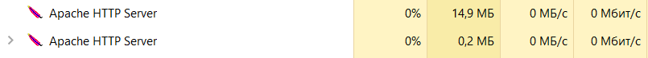

Завантажуємо останню версію Оракл 2.4 з офіційного сайту
Hалаштовуємо файл httpd.conf
Завантажуємо PHP та створюємо папку для нього
Обираємо необхідну версію, важливо, щоб вона була thread-safe
Розпаковуємо апхів до створеної папки та перейменовуємо файл php.ini-development на php.ini
Підключаємо модуль PHP
Запускаємо сервер через програму PowerShell
Далі програму можна побачити в диспетчері задач
Створимо в папці htdocs файл index.php наступного змісту:
Запускаємо сервер, заходиимо на локалхост і маємо результат
Одже php встановлено вірно, далі бачимо Apache handler

Відповідно, конфігурація також проведена правильно